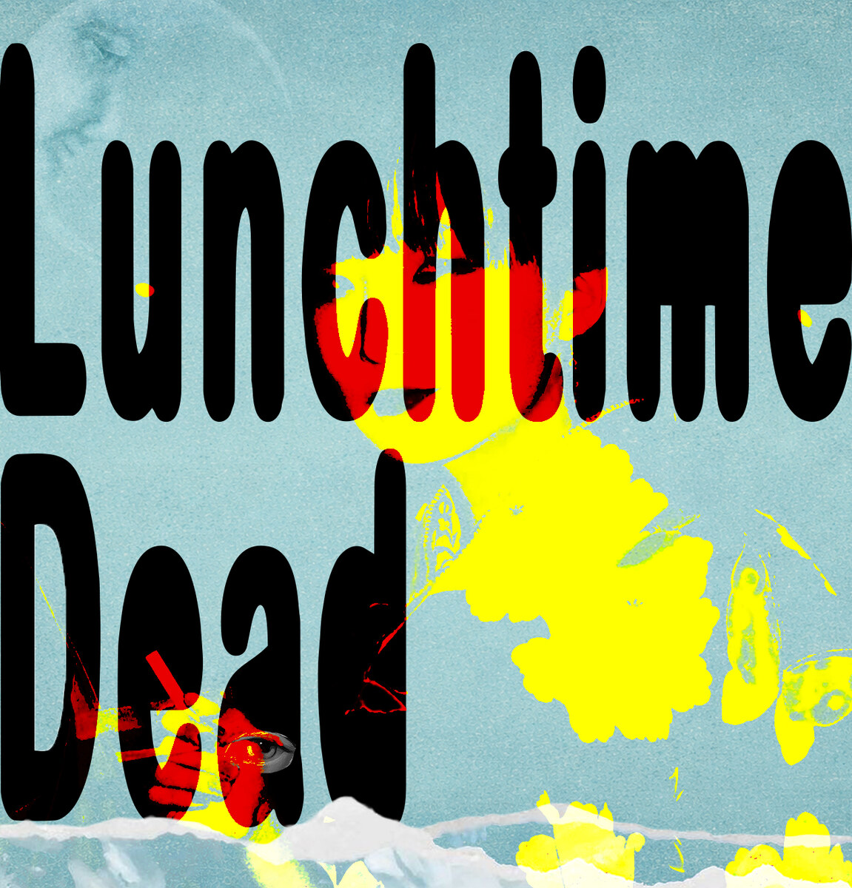

CH-04 ・ MIDNIGHT BROADCAST
1986 // 2026
● ON AIR
ランチタイム・デッド
City pop for the hour the city forgets. Punk hearts, neon veins, one long last order.
▼ INSERT TAPE音楽だけが語りかける
— only the music speaks —
LUNCHTIME DEAD ・ MUSIC PLAYER
STOP ■

0:00
0:00
VOL
000
Tracks you add are stored in this browser and appear in the shared playlist for everyone visiting from this device.
映像記録
— video archive · on air —● REC CH-04 ・ SP 0:00:00
Tsubame big joy — A city with Green
WATCH ON YOUTUBE ↗
NO SIGNAL ・ ノーシグナル
The next tape is still rewinding. New clips land here.
深夜のバー
— the bar past midnight —煙草の煙が漂う薄暗い部屋で、誰かが静かに酒を飲んでいる。音楽だけが語りかける。 Smoke drifts through a dim room. Someone drinks in silence. Only the music speaks.
FORMED
2024 ・ TokyoSOUND
City Pop × Punk × Nocturne JazzLAST ORDER
Never